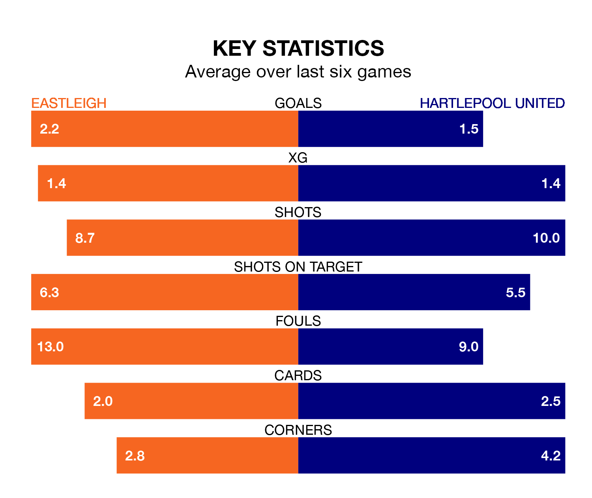

Hartlepool United travel to Eastleigh on Saturday in the National League.
The visitors come into the game on the back of a draw in their last match, having tied with Southend United 0-0 at home.
The Spitfires, meanwhile, lost their last match, 2-1 against Barnet, with their goal scored by Chris Maguire.
With 66 goals in 39 games so far this season, Eastleigh are scoring more than average in the league with 1.7 goals per game. But they are conceding more than average too, letting in 80 goals at a rate of 2.1 per game.
Hartlepool, meanwhile, are average scorers, with 1.5 goals per game. They have conceded 1.7 goals per game.
In the last 10 years, Eastleigh and Hartlepool have played each other on nine occasions. Eastleigh won four of them, Hartlepool two, and they drew three times.
On average, the Spitfires scored 1.7 goals and Pools 1.6 in those matches.
Their last meeting was on October 7, when Hartlepool won 3-1 at home.
The Spitfires are 18th in the table after 39 games, of which they have won 12 and drawn 10, earning 46 points.
United are five places ahead of the hosts in 13th, with 14 wins and six draws putting them on 48 points.
Eastleigh are in mixed form in the National League, with two wins and a draw from their last six games.
With two wins and two draws over that period, Pools' form is slightly better – they have taken eight points from 18, compared to Eastleigh's seven.
Updated: 10:19 (UTC), 22/03/24